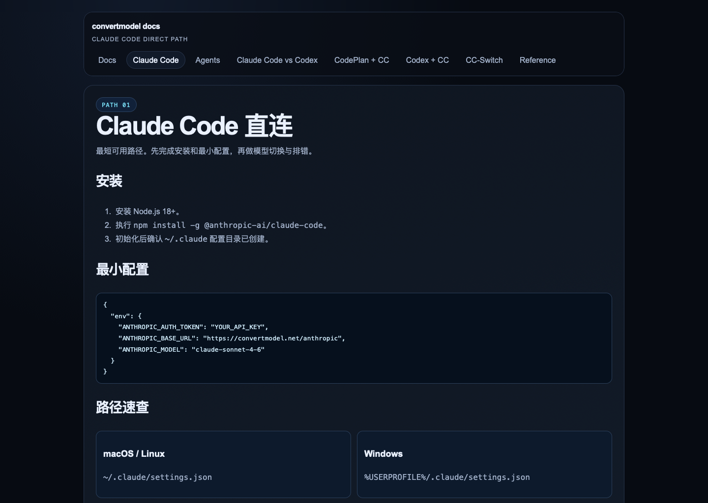
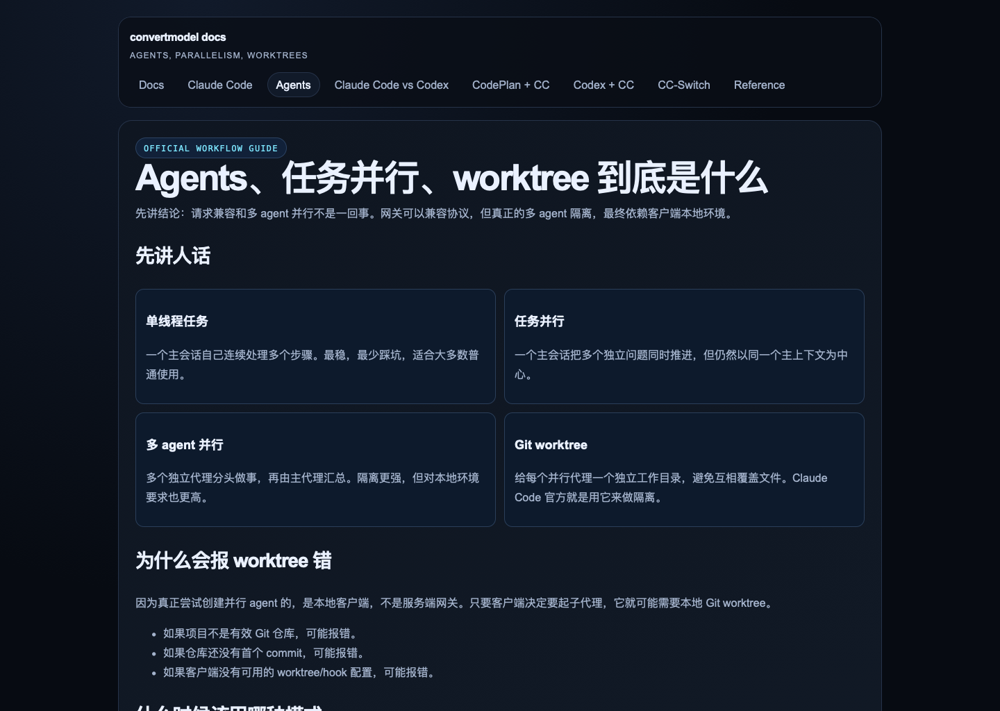
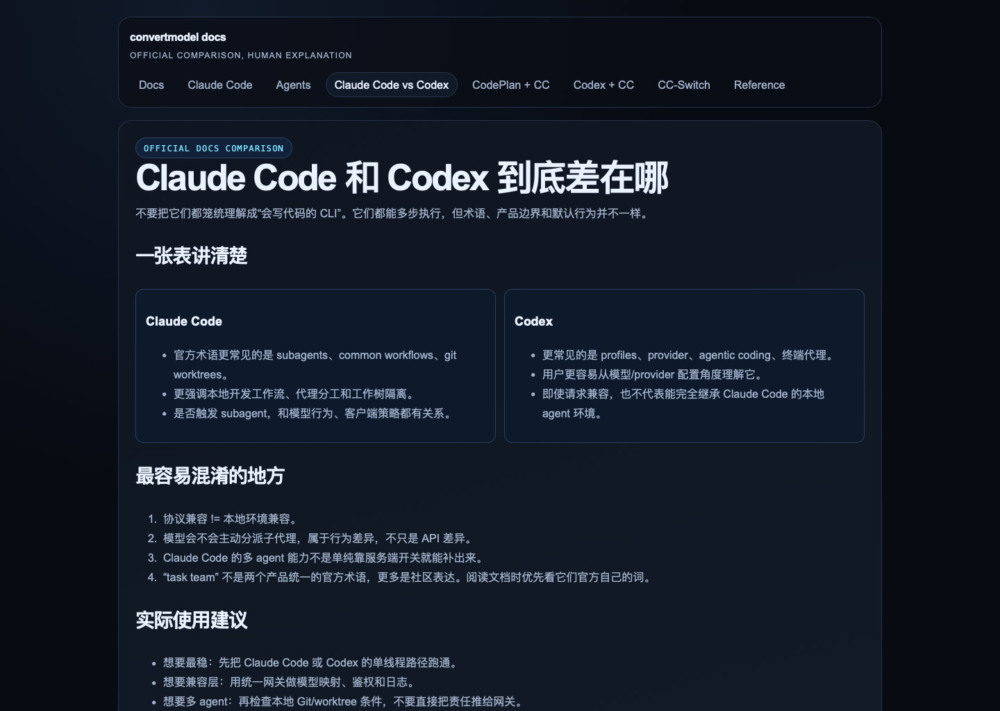

适合谁
- 想继续用 Claude Code，但订阅或上游走 Codex 风格能力
- 想统一客户端接入方式
- 想要可检查的开源 bridge 起点，而非封闭 relay
概览
Claude Code 目前没有类似应用商店的公开「从仓库安装第三方插件」流程。本仓库提供 bridge 运行时、Claude Code 一键安装脚本，以及可直接复制的配置示例——目标是插件式用户体验，底层接入点是 Claude Code 配置。
一句话：让 Claude Code 像平时一样用，但底层计费和能力入口走你配置好的 Codex 侧 bridge。
安装
你需要知道 bridge 地址，以及访问该 bridge 的 gateway key。
curl -fsSL https://raw.githubusercontent.com/UnstoppableCurry/cc-codex-plugin/main/scripts/install-claude-code.sh | bash
脚本会询问 bridge base URL、gateway key，可选默认模型；自动更新 ~/.claude/settings.json，并尽量保留已有配置，只合并所需环境变量：
ANTHROPIC_AUTH_TOKENANTHROPIC_BASE_URLANTHROPIC_MODEL（默认 claude-sonnet-4-6）重启后，Claude Code 会走你填写的 bridge。使用方式不变：打开 Claude Code、正常对话、正常写代码。
若不想跑脚本，参考 examples/claude-code/settings.json，合并进 ~/.claude/settings.json。卸载可用 scripts/uninstall-claude-code.sh 移除注入的环境变量键。
工作流
面向终端用户的主路径是先装 Claude Code 配置；完整 bridge 部署见下方自托管章节与仓库文档。
config.example.toml 为 config.toml安装脚本或手动示例写入 ANTHROPIC_AUTH_TOKEN、ANTHROPIC_BASE_URL、ANTHROPIC_MODEL。
参考 examples/codex/config.example.toml，将 Codex 指向本地 bridge provider。
先用单 agent 简单 prompt 验证：
通过后再测试工具或多步工作流。
截图
以下截图为仓库 assets/ 中的文档参考图，说明 Claude Code 配置、Agents/worktree 概念，以及 Claude Code 与 Codex 的差异——与 限制说明 中的要点一致。

settings.json 环境变量示例（与安装脚本写入的键一致）。

限制
bridge 可以规范化请求与响应格式，但无法替你准备 Claude Code 在本地期望的 IDE/CLI 能力。
若 Claude Code 尝试创建隔离 subagent，客户端可能需要：
git worktree 支持WorktreeCreate / WorktreeRemove hooks缺少这些本地前置条件时，bridge 无法仅从服务端完全修复。
普通单线程工作：bridge 很有用。多 agent 能否跑通：客户端本地环境 + 服务端兼容共同决定。
自托管
cp config.example.toml config.toml
docker build -t cc-codex-plugin .
docker run --rm -p 8000:8000 \
-v "$(pwd)/config.toml:/app/config.toml:ro" \
cc-codex-plugin \
ccproxy serve --config /app/config.toml --host 0.0.0.0 --port 8000
然后用安装脚本或手动配置，将 Claude Code 指向该 bridge。模型映射不强制单一方案——暴露少量稳定公开模型名，并在文档中说明上游映射；详见仓库 模型映射说明。